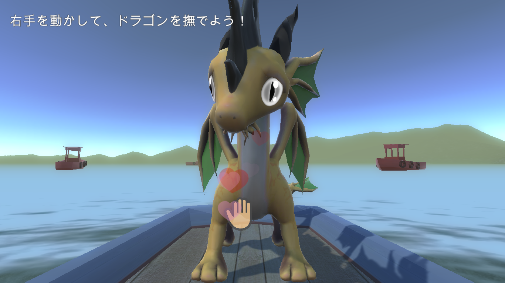
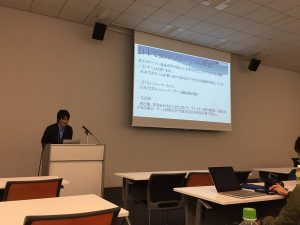

News
-
山口 聖也 wrote a new post, 初めての卒業論文閲覧, on the site 聖也の研究日誌 3年 5か月前
こんにちは、山口です。
今日、初めて白井研の卒業論文を読ましてもらいました！
読んだのは荒原一成さんの「映像多重化システムと速度変化に注目したe-sports観戦での高い一体感を生み出す演出手法の提案と開発」です。
僕はLeague of Legends をプレイしているのでe-sportsに興味があり研究テーマの参考にこちらを選ばさせていただきました。
内容はe-sports自体を[…]
-
-
-
natsuaki wrote a new post, 2016年度後期セミナーブログ馬場第4回, on the site 白井研セミナー 3年 5か月前
皆さんおはようございます。馬場夏昭です。今週は白井先生から科学館について色々なお話を聞かせて頂きました。
そして、いよいよ本格的にカレンダー作りがスタートしました。
vistaprintというオリジナルの名刺やカレンダーを制作して下さる会社に依頼してカレンダーを制作するようです。
とりあえず、カレンダーを作るために必要な「研究室の写真集め」をする方法を考えておく事と、どのくらいの「予算」が必要なのかを調べる事[…]

-
kobayu wrote a new post, 後期セミナーブログ 第７回 企画を立てよう, on the site 白井研セミナー 3年 5か月前
こんにちは小林です。
今回は今週の土曜日に後期セミナーグループで渋谷に行くための企画を作成するディスカッションを行った。
NHKの見学とTepiaの見学のあとに東京のスイーツを食べに行くという予定だ。
この予定を組む際に、集合時間、集合場所、交通手段を細かく設定し
効率よく進めるように考えた。
しかし、その結論になるまでにかなり時間がかかり、もっと別の予定や
ルートを考えられたかもしれない。
ディスカッションをす[…]
-
kobayu wrote a new post, 後期セミナーブログ 第6回 結論と三本柱, on the site 白井研セミナー 3年 5か月前
こんにちは、小林です。
今回は結論と三本柱という話を伺った。
誰かに何かを話す際にその話の結論は何か？ということを最初に述べることで
話の内容をより理解しやすくすることができ、また終わりを示すことで時間の調節がしやすくなる(その結論にもっていくように話を進めることができる)
そして、三本柱というのはその結論の根拠となる３つの要素である。
なのでプレゼンテーションをする際には
１．挨拶
２．感謝１
３．結論１
４－１[…] -
浅野 隆弥 wrote a new post, 赤ちゃんの顔が良くなりました, on the site Real Baby – Real Family 3年 6か月前
こんにちは
主にUnity担当の浅野です。初投稿です。今回は赤ちゃんの顔のテクスチャがだいぶ良くなったのでその報告です。
実は赤ちゃんの顔のテクスチャを作成するに当たりLive2Dを使用しています。
というのも赤ちゃんの顔の表情を変化させたいが、体験者によって顔のベースが変わってしまうため、
テクスチャの差分を複数枚用意し、それを変化させること(そもそもそんなノウハウは無い)や
3Dモデルの頂点を動かして[…]
-
shirai wrote a new post, 「フロム・ソフトウェア」企画、白井研究室OBによる特別講演。, on the site Shirai Lab 3年 6か月前
ゲーム制作会社「フロム・ソフトウェア」にて企画を担当する白井研究室OB・加藤匠さんによる特別講演です。
講義「メディアアート」の「メディアアートとゲーム産業」の枠にてお話いただきます。
加藤 匠
「入社5年で体験してきたゲーム作りの現場について」
入社して約5年間で何を見て、感じてきたのか。
ゲーム作りの制作工程や現場の話をします。
また、神奈川工科大学の在学中にどのような活動をして、
フロム・ソフトウェアへ[…]
-
shirai wrote a new post, DeNA主催「HEAT5th」にて3年生が発表します, on the site Shirai Lab 3年 6か月前
2016/12/3（土）に渋谷ヒカリエにて開催される、ゲーム会社の合同セミナー「HEAT 5th 渋谷」に情報メディア学科有志で参加いたします。
HEATはDeNA本社がある渋谷ヒカリエで開催されているゲーム業界を目指[…]  -
shirai wrote a new post, 白井研究室2017年度ラボメン募集, on the site Shirai Lab 3年 6か月前
研究室配属の時期です。希望者は必ず面談をお願いします。
説明会＆面談
VRエンタテイメントシステム・おもしろさを測る・科学コミュニケーションなどを探求する研究室です。K1-605 11/30(水) 15時〜, 12/1(木) 13時〜
不在時は先輩方（4年生・大学院生）に積極的に学籍番号を伝えて、相談すること。
＜現ラボメンからよせられた白井研究室ラボメンの特性＞
向いている学生
・国際派
・[…]
-
shirai wrote a new post, メディアアート特別講義チームラボ・高須正和(@tks)氏 『実験と革新』(2016/11/28), on the site Shirai Lab 3年 6か月前
2016/11/28「メディアアート」(第10回)は、メディアアート業界を牽引するウルトラテクノロジスト集団 「チームラボ株式会社」 より、高須正和氏をお呼びして、補講枠を使った特別講義とします。
『実験と革新』というタイトルをいただいております。
高須正和（タカスマサカズ）：ウルトラテクノロジスト集団 「チームラボ株式会[…]

-
東田 茉莉花 wrote a new post, #4-ノート制作：表紙デザイン編（東田茉莉花）, on the site 白井研セミナー 3年 6か月前
こんにちは東田です！各種締め切りにマッハで追いかけられています！
先週のセミナーでは，先輩方がEC2016にて発表されるプレゼンの講評を行いました．
また，Manga Generator，ExPixel, カレンダー，ノートの4つのグループに分かれ，制作の進捗報告を行いました．というわけで，失敗も踏まえ私はノート表紙の制作についてをまとめようと思います．どなたかの参考になれば幸いです．
まずは案を出します．私の場[…]
-
東田 茉莉花 wrote a new post, HEATまでの計画, on the site Real Baby – Real Family 3年 6か月前
はじめまして,東田です．数ヶ月前からモデラーとしてこっそり参加しています．
おそらくこのメンバーの中では一番技術的知識の疎い自信があります！（誇れません）
付け焼き刃の知識でお伝えするのもよろしくないでしょうということで，基本的に
難しい説明は他の四人に任せて，私は噛み砕いた説明に特化しようと思っています．
よろしくお願いします．さて，昨日11/22の定例会ですが，12/3のHEAT渋谷に向けての改修の話を[…]
-
東田 茉莉花 wrote a new post, #3-DCEXPO+IVRC2016 レポ前編（東田茉莉花）, on the site 白井研セミナー 3年 6か月前
こんにちは， 東田です．
行っ[…]
-
kobayu wrote a new post, 2016年後期セミナー ブログ第4回 TEPIA見学／Manga Generatorレビュー, on the site 白井研セミナー 3年 6か月前
先日の土曜日にTEPIAの見学をしてきました。
現在のプロジェクトであるManga Generatorの改良をする際の現在の状態を確認をするためです。
実際にその場に立って体験をしたのですが、何も予備[…]

-
aoia wrote a new post, 2016年度後期セミナーブログ 第5回 4コママンガ制作／有賀安央衣, on the site 白井研セミナー 3年 6か月前
今回は4コママンガ制作を主にやりました．
冒頭，先生に「10分で2本描いてみましょう」と言われて思わず固まってしまいました．
結局1時間ほどかけて描いたものが下記になります．
普段からマンガどころか絵もほとんど描かないので，なんとか誤魔化そうと文字ばかりの寂しいものになってしまいました．また，話の中で何を一番見せたいかもはっきりしていません．
「百聞は一見に如かず」という言葉があるように，言葉だけでの表現には限界が[…]

-
kobayu wrote a new post, 2016年後期セミナー ブログ第3回 漫画を描いてみよう, on the site 白井研セミナー 3年 7か月前
今回のセミナーは漫画を描くという内容だった
1本目は今朝の出来事
2本目は自由発想というお題だった。
1本目は今朝の通学の時の失敗談を描き
2本目の自由発想はインパクトを大事にしようということで
最初のコマから強烈なオチ(クトゥルフ)を持ってきてみた。
他の人の漫画も面白く、色々な表現が見れた。
漫画に大事なことは何を伝えたいかということで、自分が伝えたいことを一番にもっていくことが大事だということがわかった。

-
kobayu wrote a new post, カレンダー制作プロジェクト VOL2, on the site 白井研セミナー 3年 7か月前
まず、連絡の不手際で最後の作業に参加できず申し訳ありませんでした。
後期セミナーのカレンダー制作プロジェクトの最終段階が昨日終了した。
だが、自分は時間の連絡を取っておらず最終作業に参加することができなかった。
今回の失敗を反省し、次回からはもっと「ほうれんそう」を意識したい。

-
錦澤 竜也 wrote a new post, dlibでOpenCVが使えるかもしれない件, on the site Real Baby – Real Family 3年 7か月前
dlibのメソッド見てたらこんなん見つけた
・・・これ完全にOpenCVと親和性あるんじゃね？
試してみたらマジでありました。
後日コードを載せます。

-
sakakibara wrote a new post, エンタテインメントコンピューティング2016レポート—口頭・デモ発表および聴講と体験—, on the site R-Diary 3年 7か月前
今回は、11月12日(土)~11月14日(月)の三日間にわたり大阪で開催された
Entertainment Computing 2016
についてのレポートとして、口頭発表とデモ発表をした感想と、他の発表者の発表の聴講や体験[…] 
- もっと読み込む